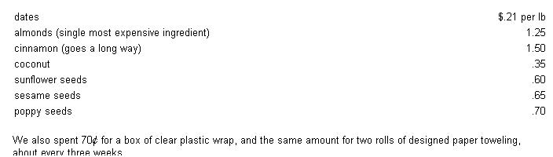
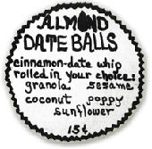
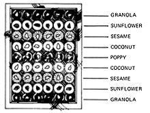

Did you ever dream, as a child, of living in your own candy factory? Well, Michael and I did it! And then we made that childhood fairy tale become a grown-up moneymaker when we invented a health candy-Almond Date Balls-and distributed our product successfully to natural food stores throughout British Columbia.
It all started one rainy, dreary evening when I timidly brought home a small box of coconut-covered date rolls which had caught my fancy at the local supermarket. ("Timidly" because we were out of work and Michael had said, "We can't afford treats.") My thrifty husband tasted the candies anyhow, and grudgingly admitted that they were good. "But man, it's really a gyp!" he added. "You can get a whole pound of dates for 31 cents and this smidgen in fancy wrapping costs 75 cents." He stalked off moodily.
Next evening, when I attempted to enter the kitchen, Michael shouted, "No, no, don't come in here. This is to be a surprise." Reluctantly I acquiesced and waited-full of suspense-in the living room. Finally he appeared, eyes gleaming triumphantly, with two steaming bowls of creamy dates the consistency of pudding. It was fantastic, and with the addition of some sunflower seeds (my insight) the date surprise tasted even better.
The following evening I took a hand in the fixings. This time we tried shaping the soft, creamy dates into balls and rolling them in coconut . . . simple and delicious. So delighted were we with our sortie into the world of candymaking that each night from then on found us deep in further confectionary explorations. Soon we were happily (and inexpensively) making date candy balls-adding and mixing new toppings each time-for special occasions and friends' birthday presents.
Later-when we were expecting a visit from my parents, whom we hadn't seen for a year-our preparations again included the making of date candy balls . . . with two notable refinements: mixing cinnamon in with the dates and adding an almond on top.
My parents were thrilled with our inventiveness and throughout their stay they never stopped telling us how good the candies were. When they left, they asked to take a box with them (for the family back home).
In the days that followed the folks' visit, we thought a lot about how we could find work that would harmonize with our freespirited lifestyle. Then one morning Michael went off early . . . and returned a while later laden with twenty packages of dates and bagfuls of almonds, coconut, granola and assorted goodies. "Are you nuts? What's all this for?" I exclaimed, flabbergasted.
Michael, however, had an idea and got right to work on it. For a few days we lived with dates and bowls of coconut, sesame seed, poppy seed and whatever all over the place. Finally it was finished: ten pounds of Almond Date Balls, neatly boxed. When we took this first "production run" to a friend who ran a natural foods restaurant, he said he'd be happy to sell them for us. So we arranged the balls on an oval plate near the cash register . . . and, to our delight, almost every customer left the restaurant with one in his hand (or mouth!).
Then we went into business! We found that we could buy 70 pounds of pitted Iranian dates from a wholesale bakery supplier at a very low price ($14.00) . . . and could also get coconut, almonds, poppy seeds and cinnamon from the same source. At first Michael made his own boxes but soon found that 54 balls fit very nicely in the bottom of a Continental Yogurt carton (cut down with a razor knife).
To pack our candies, we covered the bottom of a box with paper toweling and arranged nine rows of different flavors, six pieces to a row. After some trial and error, we finally came upon a very attractive display: We placed granola-coated balls at both ends of a box, followed by sunflower, then sesame, then coconut and finally poppy in the center. The single dark row stood out well against the white of the coconut. We then taped a piece of clear plastic wrap over the top of the package to keep the candies clean and fresh . . . and voila, the box was finished.
Finally, we inserted a homemade sign, supported on colored toothpicks, into the side of each box, and set off with our product to the various health food stores all around Vancouver. When we entered a shop we simply held out the candies. Invariably the salesperson oohed and aahed: "Oh! Doesn't that look good!"
Almond Date Balls, in fact, sold themselves. Our market soon expanded to include the university, an avant-garde cinema, an herb shop and some local groceries . . . and before long Michael and I couldn't make enough to meet the demand.
Success, however, brought one minor hang-up: sheer bulk. Each box of 54 balls weighed about three and a half pounds. That gets heavy in large numbers, and the soft candies crush and damage easily . . . so we soon purchased a used Volkswagen bus to make our deliveries.
Here's how the finances worked out: Almond Date Balls retailed at 15 cents apiece, the stores bought them from us at 10 cents and each ball cost us a little less than 3 cents to make (not including labor, or distribution expenses such as gasoline). In other words, every box sold, wholesale, for $5.40 and brought us $4.00 gross profit on our material cost. The average shop took two batches at a time, although some would buy as many as five or more.
We generally used up a whole 70-pound carton of dates in one week and turned out about 25 boxes of Almond Date Balls. The same amount of candy also required around seven pounds of almonds, three of coconut, three of sesame seeds, four of sunflower seeds and one and a half of poppy seeds.
The following is an approximate breakdown of costs of ingredients per pound ( . . . as of last winter, and you know what's been happening to food prices between then and now. -MOTHER.):
We also spent 70 cents for a box of clear plastic wrap, and the same amount for two rolls of designed paper toweling, about every three weeks.
Counting the time required for setting up and cleaning up, you can figure about one hour's work per box (that's approximately $4.00 gross profit per hour) . . . or five work hours per day for five days per 70 pounds of dates. Then, on the sixth day, all 25 boxes are piled in the van for delivery, and the seventh day is one of rest. So, for five hours' daily work (at one's own convenience) at home or on the back lawn-and one day of toting boxes-the candymaker has earned $100. That's minus the cost of transportation . . . which we never considered, for delivery time was always shopping time with us. While we sold our candies at the natural food stores, we did our marketing there too!
Another advantage of the candy business is that it needn't confine you to one location. When summer came around, we prepared a large batch of the balls, packed it in three big plastic buckets with tight lids (recycled bakery supply containers) and took the containers along on an extended holiday camping trip to the Okanagan . . . B.C.'s fruit-growing region. All the other ingredients proved equally adaptable to travel: Large plastic bags held the coatings, and the boxes, plastic rolling bowls, wooden spoons and wrapping materials packed neatly into the back of the van.
Whenever we found a nice public campsite-preferably with water nearby-and the weather was warm and sunny, we'd stop and make our candies on the grass or at a picnic table. Michael would scoop out some dates from a bucket and place an almond on top, and I would roll the ball in a bowl of poppy seed, coconut or whatnot and place it neatly in the already cut and prepared box.
We had no trouble selling Almond Date Balls on the way. In fact, that's how we paid for our trip and the wonderful fruit on which we feasted all summer. Once we came upon an outdoor crafts and pleasure fair and set up a little table of our own. People were delighted to watch and sample . . . and, since we didn't have to pay any commission to a store, all the profit was ours. By the end of just one day our pockets were jingling merrily.
This is the first time we've told the Almond Date Ball story in its entirety. You see, we're not in the candy business anymore, but have suddenly and unexpectedly become free-lance writers. With luck, maybe we'll be back to give you news of that scene . . . and by then we may, just as suddenly and unexpectedly, be doing something else again.
|
|
|
 |
|
 |
 |
|